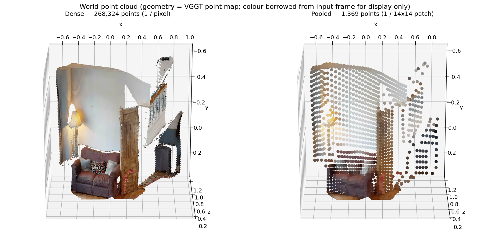
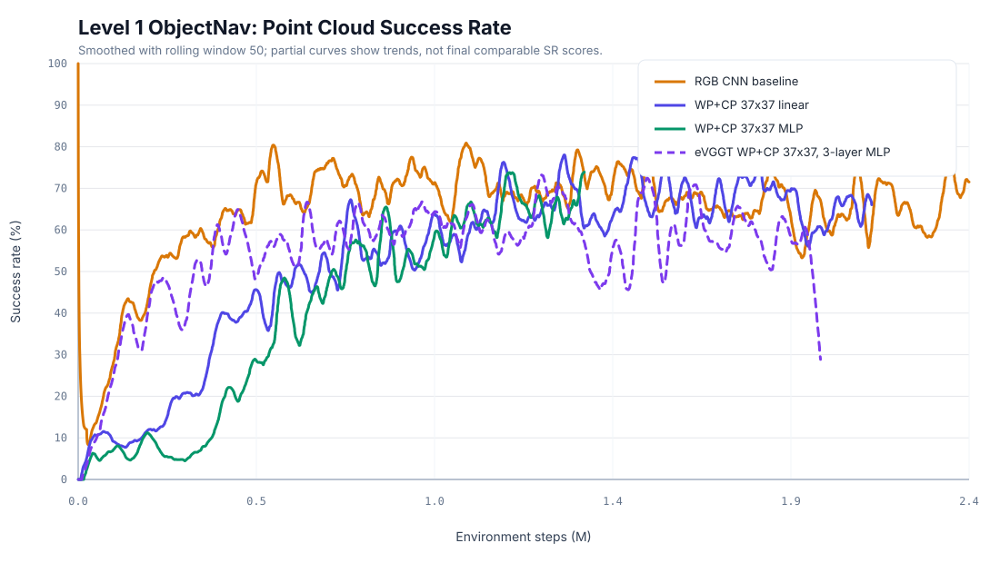
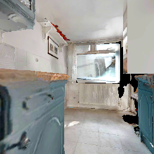
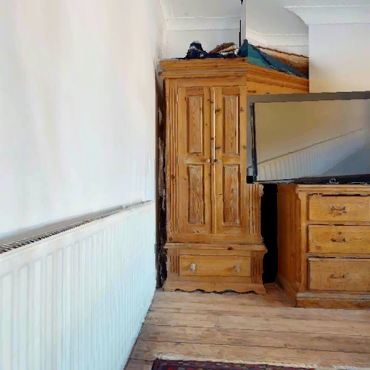
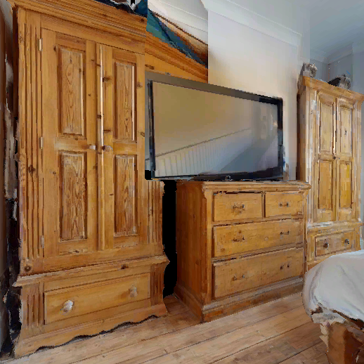
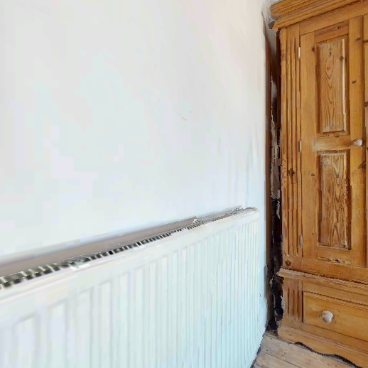
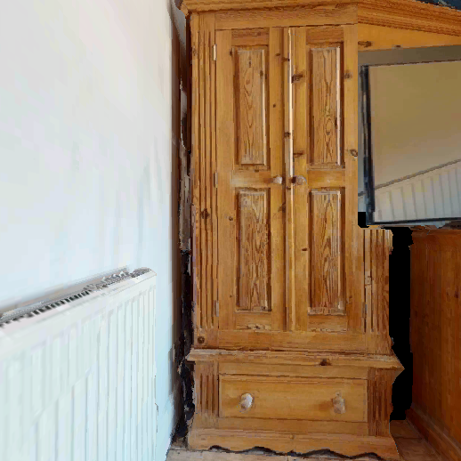
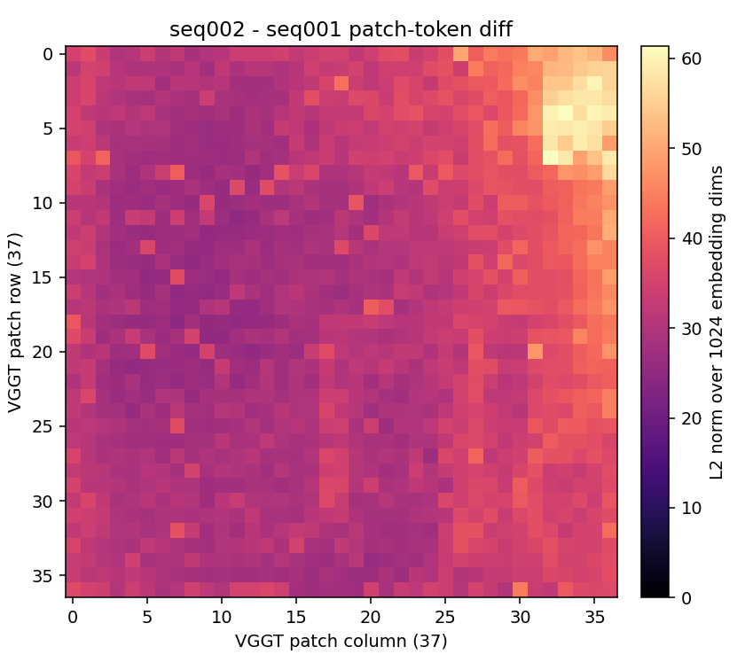
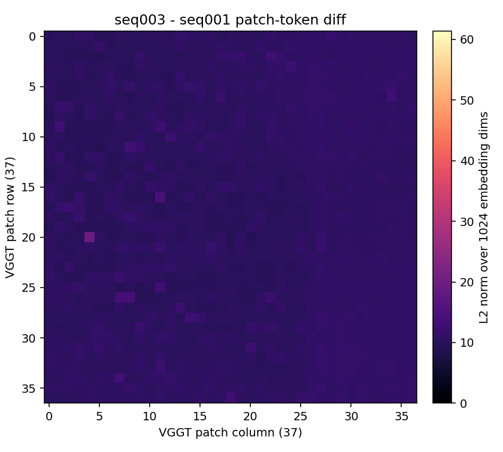

Result: Only InfiniteVGGT guarantees bounded memory at arbitrary episode lengths while maintaining stable throughput (~15 fps).
Encoder Selection
Output Quality — All Variants Equivalent
Depth maps from all five variants on identical input frames — outputs are visually indistinguishable.
Selection: InfiniteVGGT selected as 3D encoder — bounded memory, stable throughput, no quality loss.
Benchmark
ObjectNav Task
Task Definition
Agent spawns at random pose in an unseen environment. Given a target object category (e.g., "chair"), navigate to any instance and call STOP within 0.1m.
Observations (Egocentric)
RGB
224×224 egocentric
Depth
224×224 egocentric
GPS+Compass
Relative to start pose
Goal
Category ID (1 of 6)
Action Space
MOVE_FORWARD 0.25mTURN_LEFT 30°TURN_RIGHT 30°STOP
Episode budget: 500 steps max. Success = STOP called within 0.1m of any target instance.
Habitat ObjectNav — agent navigates to target object in photorealistic 3D scan
Key Metrics
Metric
Measures
Success Rate
Did agent find the target?
SPL
Success weighted by path efficiency
SoftSPL
Progress toward goal (partial credit)
DTG
Distance to goal at episode end
No map, no oracle: Agent has zero prior knowledge of the environment. Must build spatial understanding from egocentric observations alone.
Benchmark
HM3D Environment & Episode Distribution
HM3D Dataset
1,000 real-world 3D scans of residential spaces
Photorealistic rendering via Habitat simulator
216 object categories with semantic annotations
Multi-room layouts: kitchens, bedrooms, bathrooms, living rooms, hallways
Standard benchmark since 2023 Habitat Challenge
6 Target Object Categories
🪑
Chair
🛏️
Bed
🪴
Plant
🚽
Toilet
📺
TV Monitor
🛋️
Sofa
What's in the Environment
Realistic clutter: furniture, appliances, decorations, doors, stairs. Scenes contain 50–300+ objects per scan. Agent must distinguish target from distractors in cluttered, multi-room layouts with varying lighting and occlusion.
Geodesic Distance Distribution
Shortest navigable path from spawn to nearest target instance (HM3D ObjectNav v2 val split)
Why geodesic distance matters: Most episodes require navigating 3–7m through multiple rooms. This is where 3D spatial understanding becomes critical — the agent must reason about room connectivity and navigate around obstacles, not just recognize objects.
Baseline
DreamerV3 — Pixel-Only World Model
RGB (224×224)
→
CNN Encoder
→
RSSM World Model
→
Actor-Critic
→
Nav Action
DreamerV3 — Pixel-Only
Baseline · JAX · 2M steps
Standard CNN encoder on 2D RGB only
Learns geometry implicitly from pixels — no depth, no 3D, no semantics
State-of-the-art general RL agent (150+ tasks, Nature 2025)
First application to HM3D ObjectNav (no prior work)
Same RSSM architecture as our approach — only encoder differs
CNN baseline episode — cnn-2M-512 agent on L1 chair-only
Our approach: keeps DreamerV3's RSSM unchanged but replaces the CNN encoder with frozen VGGT features — providing explicit 3D geometry the pixel-only baseline lacks.
Background
DreamerV3 — Recurrent State-Space Model (RSSM)
World Model (RSSM)
Deterministic — GRU carries long-range memory via \(h_t\)
Can 3D scene understanding improve world models for navigation?
VGGTDPT DepthCLIP Semantics+ DreamerV3 RSSM
Hypothesis
Replacing DreamerV3's CNN encoder with frozen VGGT + DPT features gives the world model an explicit geometric and semantic prior — leading to better sample efficiency and navigation success on HM3D ObjectNav.
Standard DreamerV3 learns all 3D structure implicitly from 2D pixels. We provide it directly via a frozen VGGT backbone.
Proposed Architecture
VGGT + DPT + DreamerV3 RSSM World Model
Canonical architecture and data-flow reference:
architecture-data-flow.html.
This slide keeps the presentation view; the global page owns the current encoder/readout matrix.
Where the 37×37 WP+CP input fits into the architecture
Architecture fit
This is an encoder/readout ablation; DreamerV3 RSSM and actor-critic stay unchanged.
Representation
The agent receives pooled WP plus CP: 37x37x3 + 9 = 4116.
Readout
Linear and 3-layer MLP variants consume the same vector; only the projection changes.
Point Cloud 37×37 Ablation
Dense Point Cloud → native 37×37 VGGT patch grid
Image-space view: the 518×518 observation is divided into the native VGGT
37×37 patch grid. Each 14×14 cell contributes one pooled 3D point.

Point Cloud view: dense WP keeps one point per pixel; pooled WP keeps one averaged point per VGGT patch cell
(37×37 = 1369 points). This is the representation used by the main WP+CP runs.
Large geometry model predicting camera pose, depth, and dense Point Cloud outputs.
global attentionframe-wise attention
embedding width1024
24 blocksembed dim 1024DINOv2-ViT-L
→
knowledge distillationstudent learns from VGGT outputs; this is not checkpoint truncation
eVGGT student
Smaller geometry-aware encoder for robotics where online inference cost matters.
global attentionframe-wise attention
embedding width384
4 blocksembed dim 384DINOv2-ViT-S
Depth
24 -> 4 VGGT transformer blocks, each still visualized as global + frame-wise attention.
Width
1024 -> 384 embedding width in the local eVGGT note.
Distinction
The four blocks are not the Camera Head's four pose-refinement iterations.
L1 result
Technically viable, but weaker than full VGGT WP+CP in the current snapshot.
Point Cloud 37×37 Ablation
Level 1 ObjectNav: WP+CP readout variants

Rolling-window success rate from local W&B-exported metrics. Partial/crashed curves show training trends; they are not final comparable SR scores.
Runs shown
Variant
Status
Last SR / SPL
RGB CNN baseline
reference
~0.75 / ~0.55
WP+CP 37×37, linear
near-full timeout
0.62 / 0.426
WP+CP 37×37, 3-layer MLP
usable partial
0.73 / 0.507
eVGGT WP+CP 37×37, 3-layer MLP
finished
0.26 / 0.150
Takeaway:
The clean claim is about trend and representation viability: pooled WP+CP can learn L1, and the MLP readout is the strongest pure Point Cloud curve so far. Final SR comparison remains limited by partial runs.
Hybrid RGB + WP/CP
Same observation, two branches, gated fusion
RGB hybrid: cautious 3D gate
Learnable gate starts near zero: training begins close to CNN and adds WP/CP only if useful.
gate ~= 0very small in run boi0cntv
69 / 31CNN / VGGT branch share
Norm-fixed: forced balance
Same RGB64 + WP/CP input, but the 3D branch is open and branch norms stay balanced.
gate = 1opened 3D branch
50 / 50CNN / VGGT branch share
Experiment 1
VGGT first-frame invariance check
Navigate · forward

Navigate · backward
Floor-plane projection: drop z / height and plot only x-y coordinates.
Same physical scene, two different VGGT first-frame coordinate systems.
Experiment 2
VGGT sequence embeddings — fixed action paths
Start pose
same
Checked tokens
global 1374×1024
Final cosine
mean 0.964

Episode start
episode 20070chair
seq001 final
referenceF,F,L3 steps

seq002 final
largest diffF,F,RRMSE 1.059

seq003 final
F,F,L,R,LRMSE 0.329
seq004 final
F,F,L,R,R,L,LRMSE 0.530

seq005 final
F,F,L,R,FRMSE 0.758
Experiment 2
Patch-token differences reveal local embedding changes

seq002 - seq001 · F,F,R vs F,F,L · RMSE 1.059 · max 37.12

seq003 - seq001 · closest final view · RMSE 0.329 · max 5.07
seq005 - seq001 · local patch shift · RMSE 0.758 · max 23.71
Experiment 3
Why dense 518×518 Point Clouds stress replay memory
Dense Point Clouds are not just a larger readout for the model. In the current trainer,
replay is an in-process Numpy ring buffer in host RAM, so every stored transition keeps
its observation payload in memory. Checkpoints save the agent state, not the replay contents.
Observation storage per replay transition
37×37 WP+CP
~8 KiB fp16
64×64 WP+CP
~24 KiB fp16
Dense WP map
~1.5 MiB fp16
Full agg tokens
~2.7 MiB fp16
Numbers are observation payload only, before actions, rewards, done flags,
Python/Numpy overhead, sampled batches, and model activations. All rows use
fp16; storing the same tensors as fp32 would double them.
Capacity implication
Formulaelements = H * W * C + CP fp16 = 16 bits = 2 bytes per value bytes/transition = elements * 2 bytes GiB at 1M = bytes/transition * 1,000,000 / 1024^3 37*37*3 + 9 = 4116 → ~8 KiB, ~7.7 GiB at 1M. 1374 full tokens * 1024 * 2 bytes → ~2.7 MiB, ~2.6 TiB at 1M.
Representation
At 1M transitions
Config consequence
37×37 WP+CP flat
~7.7 GiB fp16
1M feasible
64×64 WP+CP flat
~22.9 GiB fp16
1M borderline
Dense 518×518 WP
~1.5 TiB fp16
5k cap currently
Full aggregator tokens
~2.6 TiB fp16
5k cap / smaller batches
Why it matters
Dense variants cannot keep the same replay capacity as the 37×37 run; reducing capacity changes the ablation.
Replay requirement
Large 3D observations need field-aware dtypes, smaller capacity, or a disk-backed feature cache.
Meeting phrasing
Pooled 37×37 keeps the 3D signal while staying compatible with a large RAM replay buffer.
Experiment 3
Replay buffer capacity gates L1 performance
W&B metrics/sr, sampled through 1.5M trainer steps. Later post-1.5M drops are omitted to compare the common learning phase.
1M replay 67%Strongest finished CNN buffer run near 1.5M; provides the most stable high-capacity baseline.
500k replay 66%Competitive during the common phase, but less consistent across seeds/status than the 1M setting.
100k replay 65%Minimum viable region: can reach strong performance, but leaves less replay diversity margin.
10k replay 21%Too small for reliable trainer performance; learning remains well below the larger buffers.
Takeaway: The trainer needs at least a 100k replay buffer, and 500k-1M is the safer operating range when memory allows it.
Results So Far
Curriculum Scaling — What Happens When We Add Complexity?
All levels: ~8,333 episodes per (house × goal) combination — train / val split 90 / 10.
Key insight: The semantic floor plan reveals that object accessibility — not distance — determines success. Goals behind walls/doorways (Geo/Euc > 1.3) are near-impossible for the 2D-only agent. This motivates 3D scene understanding.